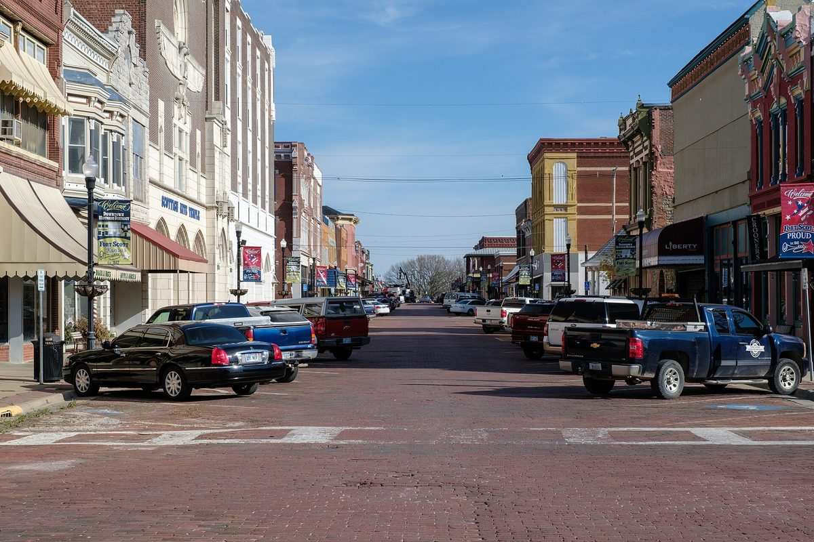

미국 캔자스 포트스콧, 시 정수장에 225kW 태양광·배터리 설치 의결…하수 기금에서 1% 이자로 빌려 짓는다

시 위원회 3 대 1 가결, 사업비 약 55만 달러 가운데 절반가량은 연방 직접지급으로 시 순부담 약 27만 달러…시공사 추산 연 3만 달러 절감·회수 약 8년, 2027년 말까지 가동해야
미국 캔자스주 포트스콧 시 위원회(City Commission)가 시 정수장에 225kW 태양광과 소형 배터리를 설치하는 사업을 3 대 1로 의결했다. 매튜 웰스(Matthew Wells)·트레이시 댄서(Tracy Dancer)·줄리 부크타(Julie Buchta) 위원이 찬성하고 팀 반후크(Tim Van Hoecke) 위원이 반대했으며, 캐스린 솔즈베리(Kathryn Salsbury) 시장은 자리에 없었다. 패널은 정수장 땅 위와 콘크리트 저수조 위에 놓이고 배터리는 짧은 전압 강하에 대응하는 용도로, 시공을 맡을 채뉴트의 SEK Solar는 처음에 시 건물 5곳을 제안했다가 정수장 한 곳으로 좁혔다. 대니얼 지비에츠(Daniel Zywietz) SEK Solar 대표는 사업비를 약 55만 달러로 잡고 그 절반가량을 연방 직접지급이 메워 시 순부담이 약 27만 달러가 된다고 추산했으며, 연 절감액 약 3만 달러와 연 수익률 약 13%, 회수 기간 약 8년도 시공사 추산이다. 시는 초기 비용을 하수 기금에서 빌려 쓰고 1% 이자를 붙여 그 기금에 갚기로 했으며, 자재는 되도록 빨리 주문하도록 했다. 브래드 맷킨(Brad Matkin) 시 관리자는 전력 서지로 정수장 설비가 망가진 적이 있다고 설명했고, 반대한 반후크 위원은 여전히 의구심이 있다고 밝혔으며, 시공사는 연방 지급을 받으려면 2027년 말까지 가동해야 한다고 설명했다.
시민에너지 관점
약 55만 달러짜리 설비를 연방 지원 절반과 시 하수 기금 1% 대출로 지어 해마다 약 3만 달러를 아끼겠다는 계산은, 공공시설 태양광이 새 예산 없이 시 안에 있는 돈을 돌려 쓰는 것만으로도 시작될 수 있음을 보여 준다. 시공사 추산이 빗나가거나 하수 기금이 급히 필요해지면 어떻게 하느냐는 우려도 있지만, 이자를 붙여 기금에 되갚는 구조라 아낀 전기요금은 결국 시민의 공공 자산으로 돌아간다. 일본 요나고시가 2015년 지역 기업 5곳과 함께 출자해 지역에너지회사를 세웠듯, 공공시설 발전에 지자체와 지역 기업·주민이 함께 주인으로 들어가면 절감액은 운영 수익과 지역 일자리로 넓어진다. 우리 지자체도 정수장·하수처리장처럼 전기를 많이 쓰는 공공시설부터 자체 기금과 주민 출자를 묶어 직접 짓는 길을 열어야 한다.
출처: Ad Astra Radio 2026-10-27 Aaron Napier 원문 보기
米カンザス州フォートスコット、市の浄水場に225kWの太陽光と蓄電池を設置へ…下水基金から1%の利息で借りて建設
市委員会が3対1で可決、事業費約55万ドルの半分ほどを連邦の直接支払いで賄い市の実質負担は約27万ドル…施工会社の試算で年3万ドルの節約・回収約8年、2027年末までの稼働が条件
米カンザス州フォートスコットの市委員会（City Commission）は、市の浄水場に225kWの太陽光発電と小型蓄電池を設置する事業を3対1で可決した。マシュー・ウェルズ（Matthew Wells）、トレイシー・ダンサー（Tracy Dancer）、ジュリー・ブクタ（Julie Buchta）の各委員が賛成し、ティム・バンフック（Tim Van Hoecke）委員が反対、キャスリン・ソールズベリー（Kathryn Salsbury）市長は欠席した。パネルは浄水場の地上とコンクリート製貯水槽の上に設置し、蓄電池は短時間の電圧低下に備えるためのもので、施工を担うチャヌートのSEK Solarは当初、市の建物5か所を提案していたが、浄水場1か所に絞り込んだ。SEK Solarのダニエル・ジビエツ代表（Daniel Zywietz）は、事業費を約55万ドルと見積もり、その半分ほどを連邦の直接支払いで賄うことで市の実質負担は約27万ドルになると試算しており、年約3万ドルの節約額、年約13%の利回り、約8年の回収期間も施工会社の試算だ。市は初期費用を下水基金から借り入れ、1%の利息を付けて同基金に返済することにし、資材はできるだけ早く発注するよう決めた。ブラッド・マトキン（Brad Matkin）市管理官は電力サージで浄水場の設備が壊れたことがあると説明し、反対したバンフック委員はなお懸念があると述べ、施工会社は連邦の支払いを受けるには2027年末までに稼働させる必要があると説明した。
市民エネルギーの視点
約55万ドルの設備を連邦支援の半分と市の下水基金からの1%の借り入れで建て、毎年約3万ドルを節約するという計算は、公共施設の太陽光が新たな予算なしに市の中のお金を回すだけでも始められることを示している。施工会社の試算が外れたり、下水基金が急に必要になったりしたらどうするのかという懸念もあるが、利息を付けて基金に返す仕組みなので、浮いた電気料金は結局市民の公共資産に戻る。鳥取県米子市が2015年に地元企業5社と共同出資して地域エネルギー会社を設立したように、公共施設の発電に自治体と地元企業・住民がともに持ち主として加われば、節約分は運営収益や地域の雇用へと広がる。韓国の自治体も、浄水場や下水処理場のように電力を多く使う公共施設から、自前の基金と住民出資を組み合わせて自ら建てる道を開くべきだ。
出典: アド・アストラ・ラジオ 2026-10-27 アーロン・ネイピア 原文を読む
美国堪萨斯州斯科特堡决定在市净水厂安装225kW光伏和储能…从污水基金以1%利息借款建设
市委员会以3比1通过，约55万美元的项目费用约一半由联邦直接支付承担，市政府净负担约27万美元…施工方估算每年节省3万美元、约8年回本，须在2027年底前投运
美国堪萨斯州斯科特堡市委员会（City Commission）以3比1的表决结果，通过了在市净水厂安装225kW光伏和小型电池的项目。委员Matthew Wells、Tracy Dancer和Julie Buchta投赞成票，委员Tim Van Hoecke投反对票，市长Kathryn Salsbury缺席。光伏板将安装在净水厂地面和混凝土蓄水池上方，电池用于应对短时电压下降；负责施工的沙努特（Chanute）公司SEK Solar起初提议在5栋市政建筑上安装，后来缩小到净水厂一处。SEK Solar负责人Daniel Zywietz估算项目费用约55万美元，其中约一半由联邦直接支付承担，市政府净负担约27万美元；每年约3万美元的节省额、约13%的年收益率和约8年的回收期也都是施工方的估算。市政府决定先从污水基金借出初期费用，再按1%的利息偿还该基金，并要求尽快订购材料。市行政官Brad Matkin说明，净水厂设备曾因电涌受损；投反对票的Van Hoecke表示仍有疑虑；施工方则表示，要获得联邦付款，系统必须在2027年底前投入运行。
市民能源视角
用一半联邦支持加上市污水基金1%的借款建起约55万美元的设施、每年节省约3万美元，这笔账说明公共设施光伏无需新增预算，只要把市里现有的钱周转起来就能起步。有人担心施工方的估算落空，或者污水基金急需用钱时怎么办，但由于是连本带息还给基金，省下的电费最终仍会回到市民的公共资产中。正如日本米子市2015年与5家本地企业共同出资成立地方能源公司那样，如果地方政府与本地企业、居民一起成为公共设施发电的主人，节省的钱就能扩大为运营收益和本地就业。韩国的地方政府也应从净水厂、污水处理厂这类用电大户的公共设施做起，把自有基金和居民出资结合起来，开辟自己建设的道路。
来源: Ad Astra电台 2026-10-27 Aaron Napier 查看原文
Fort Scott, Kansas, approves 225kW solar and battery system at city water plant, financed with a 1% loan from its wastewater fund
City Commission votes 3-1; a federal direct payment is expected to cover about half of the roughly $550,000 cost, leaving the city about $270,000; installer projects $30,000 in annual savings and an eight-year payback, with operation required by the end of 2027
The Fort Scott City Commission in Kansas has voted 3-1 to install a 225-kilowatt solar system with a small battery at the city's water treatment plant. Commissioners Matthew Wells, Tracy Dancer and Julie Buchta voted in favour and Commissioner Tim Van Hoecke voted against, with Mayor Kathryn Salsbury absent. Panels will go on the ground and on the plant's concrete reservoir, and the battery is meant to carry the plant through brief power dips; installer SEK Solar of Chanute first proposed systems at five city buildings before narrowing the plan to the water plant. SEK Solar owner Daniel Zywietz estimated the project at about $550,000, with a federal direct payment covering roughly half and leaving the city about $270,000 to pay, and the projected annual savings of about $30,000, annual return of about 13% and payback of about eight years are also the installer's estimates. The city will borrow the upfront cost from its wastewater fund and repay that fund at 1% interest, and commissioners directed that materials be ordered as quickly as possible. City Manager Brad Matkin told commissioners that power surges have damaged equipment at the plant, Van Hoecke said he still had reservations, and the installer said the system must be running by the end of 2027 to qualify for the federal payment.
Citizen Energy View
Building a roughly $550,000 system with half from federal support and a 1% loan from the city's own wastewater fund, in order to save about $30,000 a year, shows that solar on public facilities can start without a new budget, simply by putting money the city already holds to work. There are fair worries about what happens if the installer's estimates miss or the wastewater fund is suddenly needed, but because the loan is repaid with interest, the money saved on power bills ultimately returns to citizens as a public asset. Just as the Japanese city of Yonago set up a local energy company in 2015 together with five local businesses, bringing the municipality, local firms and residents in as co-owners of generation on public facilities would widen those savings into operating income and local jobs. Korean local governments should open the way to build their own systems, starting with power-hungry public facilities such as water and wastewater plants, by combining their own funds with resident investment.
Source: Ad Astra Radio 2026-10-27 Aaron Napier Read the original